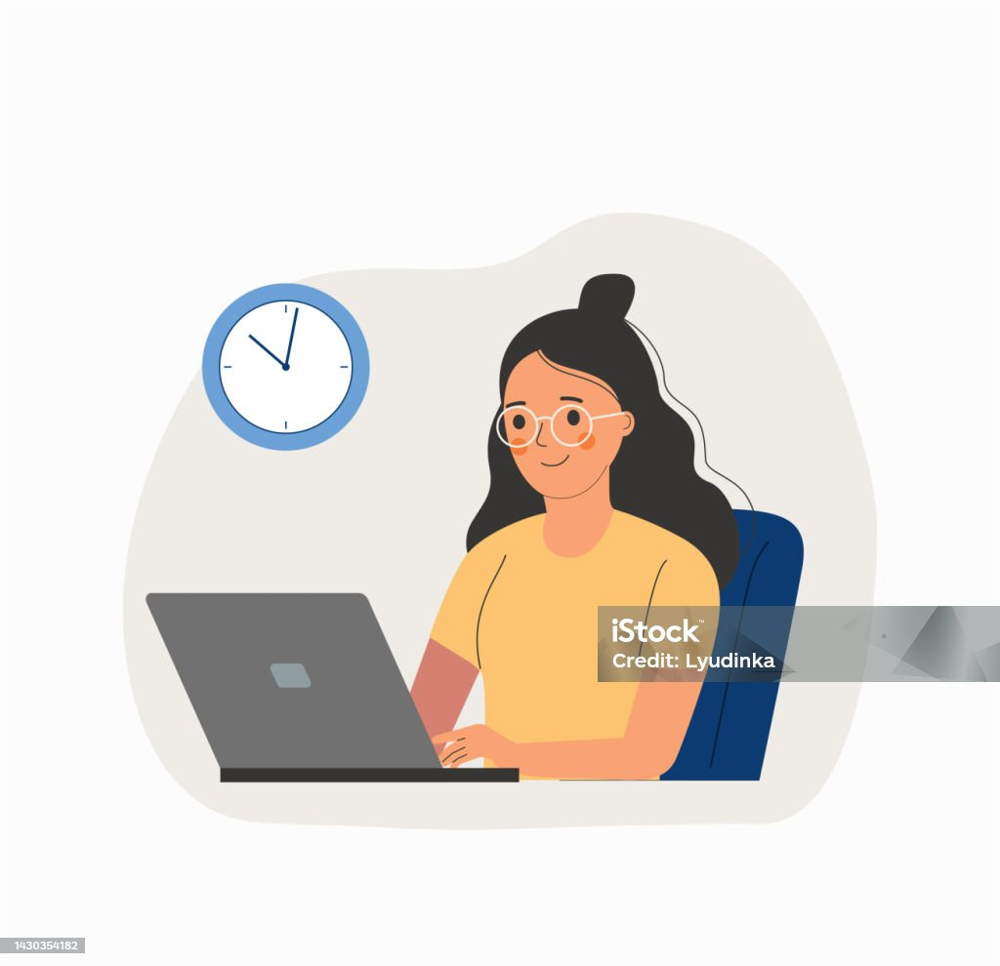

Conocimiento que conecta
Arquitectura de la información
Storytellin: "La búsqueda de Ana"
Ana es una estudiante de la licenciatura de Diseño y comunicación gráfica, en la Universidad del Valle de México. Ella esta cursando su materia de Programación en ambiente web, por lo que tiene que hacer una entrega en línea de un trabajo que realizaron en equipo y a ella se le asigno subir el trabajo. Al ingresar a la página principal de la Universidad desde su ordenador, se enfrenta a una situación sumamente complicada: los botones no tienen etiquetas lógicas, los menús están ocultos y dispersos en lugares extraños, la información esta completamente dispersa por toda la pagina, por lo que al querer ingresar al apartado de su materia le resulta muy complicado.
El tiempo va corriendo y la frustración en Ana va escalando, ya que Ana piensa en cómo puede ser tan complicado entrar a un sitio web para hacer la entrega de su trabajo, por lo que se da cuenta de la necesidad de una buena arquitectura en la información de la página web, para que resulte fácil ingresar en cada apartado de cada materia, y así poder entregar su trabajo a tiempo. Por lo que ahora Ana se pregunta ¿qué es lo que le da sentido a la información dentro de una página web? Y para esto responderemos: La Arquitectura de la Información.

La Arquitectura de la Información es la disciplina responsable del estudio, análisis, estructura y organización de los contenidos dentro de las páginas web, así como también de la disposición y presentación de los datos en los sistemas. Por lo que la arquitectura ayuda en todo momento al usuario a encontrar lo que busca dentro de la página, lo cual aumenta una mejora en la experiencia del usuario y así genera más visitas dentro de tu sitio web. Para poder aplicar una buena arquitectura de la información, es fundamental gestionar puntos clave dentro de la página, como de que tipo de web se trata, la arquitectura si es vertical u horizontal, la estructuración del contenido, definir la User experience (UX), tener claras las URLs indexables. Finalmente al definir y tenr clara la información, podemos dar una estructura más adaptada a nuestro sitio web y así, evitamos percances en las entregas o busquedas de los alumnos, tal como el caso de Ana.

"¿Qué es la Arquitectura de la información Web y por qué es tan importante para tu proyecto?"
.png)
"Arquitectura de la información: qué es y cómo hacerlo."
Imagenes recopiladas: https://pixabay.com/es/ | https://www.flaticon.es/